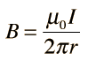

Magnetic Force Between Wires
The magnetic field of an infinitely long straight wire can be obtained by applying Ampere's law. The expression for the magnetic field is
|  | Show |
Once the magnetic field has been calculated, the magnetic force expression can be used to calculate the force. The direction is obtained from the right hand rule. Note that two wires carrying current in the same direction attract each other, and they repel if the currents are opposite in direction. The calculation below applies only to long straight wires, but is at least useful for estimating forces in the ordinary circumstances of short wires. Once you have calculated the force on wire 2, of course the force on wire 1 must be exactly the same magnitude and in the opposite direction according to Newton's third law.
The earth's magnetic field is about 0.5 gauss.

Magnetic field concepts
Currents as magnetic sources
| HyperPhysics***** Electricity and Magnetism | R Nave |